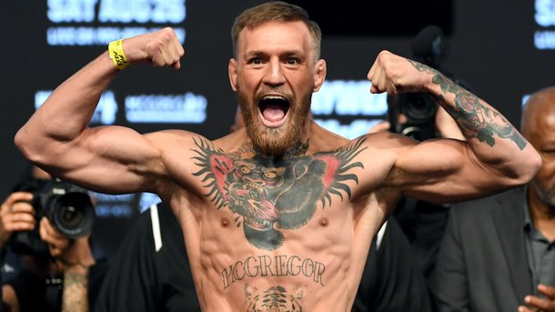
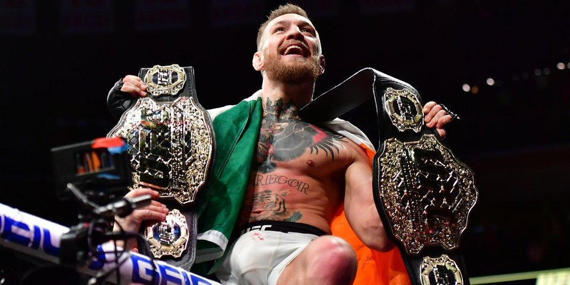
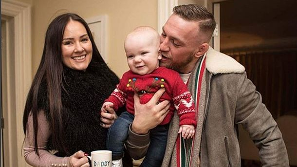

Поединок был завершен досрочно: Хабиб Нурмагомедов победил в 4 раунде, применив удушающий прием. Дагестанский боец впервые в карьере защитил свой чемпионский пояс UFC в легком весе. Однако, радость победы омрачил неприятный инцидент: организаторы отказались вручать чемпионский пояс прямо на ринге, опасаясь реакции болельщиков Конора. После долгого напряженного противостояния и провокаций со стороны ирландца нервы дагестанского бойца не выдержали. Он выпрыгнул за октагон и ввязался в драку. Сцепились команды двух бойцов. Охране удалось быстро загасить конфликт, но теперь Хабиба Нурмагомедова могут лишить чемпионского пояса.
прррппрролороррмппаприириро
После победы над Макгрегором на турнире UFC 229 Нурмагомедов вырвался из октагона и напал на тренера ирландца Диллона Дэниса. Это спровоцировало драку между командами спортсменов. Позднее комментатор Джо Роган заявил, что Дэнис провоцировал российского бойца.Для Нурмагомедова победа над Макгрегором стала 27-й в 27 проведенных боях в профессиональной карьере. Спортсмен впервые защитил титул чемпиона UFC в легком весе.
Конор Макгрегор официально не женат, но живет гражданским браком с красавицей-ирландкой Ди Девлин (Dee Devlin). Сейчас ей 30 лет, как и Конору.С уроженкой одного из пригородов Дублина Макгрегор познакомился в 2009 году в ночном клубе, рассказывает Sports.ru. «Ди мне просто понравилась, захотелось узнать ее получше, - признавался позднее Конор в одном из интервью. - Мне нравятся хорошие девушки».На вопрос о том, чем Конор ее очаровал, Ди отвечала: «Ему удалось меня рассмешить на первом же свидании. Это не была показуха или какая-то заготовка - он действительно такой, всегда готов поднять настроение».Вместе с Ди Девлин боец поднялся к вершинам MMA.«Она была со мной, когда я был никем», - отмечает Макгрегор. В начале отношений влюбленные жили на пособие по безработице - 188 евро в месяц. Найти работу Конор не мог, посольку целыми днями пропадал в спортзале. Ди отвозила его на тренировки на машине, следила за питанием и всегда верила, что Макгрегор станет чемпионом.